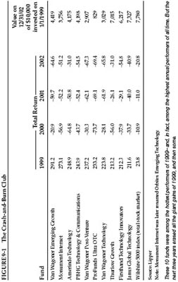

The schoolteacher asks Billy Bob: “If you have twelve sheep and one jumps over the fence, how many sheep do you have left?”
Billy Bob answers, “None.”
“Well,” says the teacher, “you sure don’t know your subtraction.”
“Maybe not,” Billy Bob replies, “but I darn sure know my sheep.”
—an old Texas joke
A purely American creation, the mutual fund was introduced in 1924 by a former salesman of aluminum pots and pans named Edward G. Leffler. Mutual funds are quite cheap, very convenient, generally diversified, professionally managed, and tightly regulated under some of the toughest provisions of Federal securities law. By making investing easy and affordable for almost anyone, the funds have brought some 54 million American families (and millions more around the world) into the investing mainstream—probably the greatest advance in financial democracy ever achieved.
But mutual funds aren’t perfect; they are almost perfect, and that word makes all the difference. Because of their imperfections, most funds underperform the market, overcharge their investors, create tax headaches, and suffer erratic swings in performance. The intelligent investor must choose funds with great care in order to avoid ending up owning a big fat mess.
Most investors simply buy a fund that has been going up fast, on the assumption that it will keep on going. And why not? Psychologists have shown that humans have an inborn tendency to believe that the long run can be predicted from even a short series of outcomes. What’s more, we know from our own experience that some plumbers are far better than others, that some baseball players are much more likely to hit home runs, that our favorite restaurant serves consistently superior food, and that smart kids get consistently good grades. Skill and brains and hard work are recognized, rewarded—and consistently repeated—all around us. So, if a fund beats the market, our intuition tells us to expect it to keep right on outperforming.
Unfortunately, in the financial markets, luck is more important than skill. If a manager happens to be in the right corner of the market at just the right time, he will look brilliant—but all too often, what was hot suddenly goes cold and the manager’s IQ seems to shrivel by 50 points. Figure 9-1 shows what happened to the hottest funds of 1999.
This is yet another reminder that the market’s hottest market sector—in 1999, that was technology—often turns as cold as liquid nitrogen, with blinding speed and utterly no warning. 1 And it’s a reminder that buying funds based purely on their past performance is one of the stupidest things an investor can do. Financial scholars have been studying mutual-fund performance for at least a half century, and they are virtually unanimous on several points:

Your chances of selecting the top-performing funds of the future on the basis of their returns in the past are about as high as the odds that Bigfoot and the Abominable Snowman will both show up in pink ballet slippers at your next cocktail party. In other words, your chances are not zero—but they’re pretty close. (See sidebar, p. 255.)
But there’s good news, too. First of all, understanding why it’s so hard to find a good fund will help you become a more intelligent investor. Second, while past performance is a poor predictor of future returns, there are other factors that you can use to increase your odds of finding a good fund. Finally, a fund can offer excellent value even if it doesn’t beat the market—by providing an economical way to diversify your holdings and by freeing up your time for all the other things you would rather be doing than picking your own stocks.
Why don’t more winning funds stay winners?
The better a fund performs, the more obstacles its investors face:
Migrating managers . When a stock picker seems to have the Midas touch, everyone wants him—including rival fund companies. If you bought Transamerica Premier Equity Fund to cash in on the skills of Glen Bickerstaff, who gained 47.5% in 1997, you were quickly out of luck; TCW snatched him away in mid-1998 to run its TCW Galileo Select Equities Fund, and the Transamerica fund lagged the market in three of the next four years. If you bought Fidelity Aggressive Growth Fund in early 2000 to capitalize on the high returns of Erin Sullivan, who had nearly tripled her shareholders’ money since 1997, oh well: She quit to start her own hedge fund in 2000, and her former fund lost more than three-quarters of its value over the next three years. 3
Asset elephantiasis. When a fund earns high returns, investors notice—often pouring in hundreds of millions of dollars in a matter of weeks. That leaves the fund manager with few choices—all of them bad. He can keep that money safe for a rainy day, but then the low returns on cash will crimp the fund’s results if stocks keep going up. He can put the new money into the stocks he already owns—which have probably gone up since he first bought them and will become dangerously overvalued if he pumps in millions of dollars more. Or he can buy new stocks he didn’t like well enough to own already—but he will have to research them from scratch and keep an eye on far more companies than he is used to following.
Finally, when the $100-million Nimble Fund puts 2% of its assets (or $2 million) in Minnow Corp., a stock with a total market value of $500 million, it’s buying up less than one-half of 1% of Minnow. But if hot performance swells the Nimble Fund to $10 billion, then an investment of 2% of its assets would total $200 million—nearly half the entire value of Minnow, a level of ownership that isn’t even permissible under Federal law. If Nimble’s portfolio manager still wants to own small stocks, he will have to spread his money over vastly more companies—and probably end up spreading his attention too thin.
No more fancy footwork. Some companies specialize in “incubating” their funds—test-driving them privately before selling them publicly. (Typically, the only shareholders are employees and affiliates of the fund company itself.) By keeping them tiny, the sponsor can use these incubated funds as guinea pigs for risky strategies that work best with small sums of money, like buying truly tiny stocks or rapid-fire trading of initial public offerings. If its strategy succeeds, the fund can lure public investors en masse by publicizing its private returns. In other cases, the fund manager “waives” (or skips charging) management fees, raising the net return—then slaps the fees on later after the high returns attract plenty of customers. Almost without exception, the returns of incubated and fee-waived funds have faded into mediocrity after outside investors poured millions of dollars into them.
Rising expenses. It often costs more to trade stocks in very large blocks than in small ones; with fewer buyers and sellers, it’s harder to make a match. A fund with $100 million in assets might pay 1% a year in trading costs. But, if high returns send the fund mushrooming up to $10 billion, its trades could easily eat up at least 2% of those assets. The typical fund holds on to its stocks for only 11 months at a time, so trading costs eat away at returns like a corrosive acid. Meanwhile, the other costs of running a fund rarely fall—and sometimes even rise—as assets grow. With operating expenses averaging 1.5%, and trading costs at around 2%, the typical fund has to beat the market by 3.5 percentage points per year before costs just to match it after costs!
Sheepish behavior. Finally, once a fund becomes successful, its managers tend to become timid and imitative. As a fund grows, its fees become more lucrative—making its managers reluctant to rock the boat. The very risks that the managers took to generate their initial high returns could now drive investors away—and jeopardize all that fat fee income. So the biggest funds resemble a herd of identical and overfed sheep, all moving in sluggish lockstep, all saying “baaaa” at the same time. Nearly every growth fund owns Cisco and GE and Microsoft and Pfizer and Wal-Mart—and in almost identical proportions. This behavior is so prevalent that finance scholars simply call it herding. 4 But by protecting their own fee income, fund managers compromise their ability to produce superior returns for their outside investors.
FIGURE 9-2 The Funnel of Fund Performance
Looking back from December 31, 2002, how many U.S. stock funds outperformed Vanguard 500 Index Fund?
One year:
1,186 of 2,423 funds (or 48.9%)Three years:
1,157 of 1,944 funds (or 59.5%)Five years:
768 of 1,494 funds (or 51.4%)Ten years:
227 of 728 funds (or 31.2%)Fifteen years:
125 of 445 funds (or 28.1%)Twenty years:
37 of 248 funds (or 14.9%)
Source: Lipper Inc.
Because of their fat costs and bad behavior, most funds fail to earn their keep. No wonder high returns are nearly as perishable as unrefrigerated fish. What’s more, as time passes, the drag of their excessive expenses leaves most funds farther and farther behind, as Figure 9.2 shows. 5
What, then, should the intelligent investor do?
First of all, recognize that an index fund—which owns all the stocks in the market, all the time, without any pretense of being able to select the “best” and avoid the “worst”—will beat most funds over the long run. (If your company doesn’t offer a low-cost index fund in your 401(k), organize your coworkers and petition to have one added.) Its rock-bottom overhead—operating expenses of 0.2% annually, and yearly trading costs of just 0.1%—give the index fund an insurmountable advantage. If stocks generate, say, a 7% annualized return over the next 20 years, a low-cost index fund like Vanguard Total Stock Market will return just under 6.7%. (That would turn a $10,000 investment into more than $36,000.) But the average stock fund, with its 1.5% in operating expenses and roughly 2% in trading costs, will be lucky to gain 3.5% annually. (That would turn $10,000 into just under $20,000—or nearly 50% less than the result from the index fund.)
Index funds have only one significant flaw: They are boring. You’ll never be able to go to a barbecue and brag about how you own the top-performing fund in the country. You’ll never be able to boast that you beat the market, because the job of an index fund is to match the market’s return, not to exceed it. Your index-fund manager is not likely to “roll the dice” and gamble that the next great industry will be teleportation, or scratch-’n’-sniff websites, or telepathic weight-loss clinics; the fund will always own every stock, not just one manager’s best guess at the next new thing. But, as the years pass, the cost advantage of indexing will keep accruing relentlessly. Hold an index fund for 20 years or more, adding new money every month, and you are all but certain to outper-forms the vast majority of professional and individual investors alike. Late in his life, Graham praised index funds as the best choice for individual investors, as does Warren Buffett. 6
When you add up all their handicaps, the wonder is not that so few funds beat the index, but that any do. And yet, some do. What qualities do they have in common?
Their managers are the biggest shareholders. The conflict of interest between what’s best for the fund’s managers and what’s best for its investors is mitigated when the managers are among the biggest owners of the fund’s shares. Some firms, like Longleaf Partners, even forbid their employees from owning anything but their own funds. At Longleaf and other firms like Davis and FPA, the managers own so much of the funds that they are likely to manage your money as if it were their own—lowering the odds that they will jack up fees, let the funds swell to gargantuan size, or whack you with a nasty tax bill. A fund’s proxy statement and Statement of Additional Information, both available from the Securities and Exchange Commission through the EDGAR database at www.sec.gov, disclose whether the managers own at least 1% of the fund’s shares.
They are cheap. One of the most common myths in the fund business is that “you get what you pay for”—that high returns are the best justification for higher fees. There are two problems with this argument. First, it isn’t true; decades of research have proven that funds with higher fees earn lower returns over time. Secondly, high returns are temporary, while high fees are nearly as permanent as granite. If you buy a fund for its hot returns, you may well end up with a handful of cold ashes—but your costs of owning the fund are almost certain not to decline when its returns do.
They dare to be different. When Peter Lynch ran Fidelity Magellan, he bought whatever seemed cheap to him—regardless of what other fund managers owned. In 1982, his biggest investment was Treasury bonds; right after that, he made Chrysler his top holding, even though most experts expected the automaker to go bankrupt; then, in 1986, Lynch put almost 20% of Fidelity Magellan in foreign stocks like Honda, Norsk Hydro, and Volvo. So, before you buy a U.S. stock fund, compare the holdings listed in its latest report against the roster of the S & P 500 index; if they look like Tweedledee and Tweedledum, shop for another fund. 7
They shut the door. The best funds often close to new investors—permitting only their existing shareholders to buy more. That stops the feeding frenzy of new buyers who want to pile in at the top and protects the fund from the pains of asset elephantiasis. It’s also a signal that the fund managers are not putting their own wallets ahead of yours. But the closing should occur before—not after—the fund explodes in size. Some companies with an exemplary record of shutting their own gates are Longleaf, Numeric, Oakmark, T. Rowe Price, Vanguard, and Wasatch.
They don’t advertise. Just as Plato says in The Republic that the ideal rulers are those who do not want to govern, the best fund managers often behave as if they don’t want your money. They don’t appear constantly on financial television or run ads boasting of their No. 1 returns. The steady little Mairs & Power Growth Fund didn’t even have a website until 2001 and still sells its shares in only 24 states. The Torray Fund has never run a retail advertisement since its launch in 1990.
What else should you watch for? Most fund buyers look at past performance first, then at the manager’s reputation, then at the riskiness of the fund, and finally (if ever) at the fund’s expenses. 8
The intelligent investor looks at those same things—but in the opposite order.
Since a fund’s expenses are far more predictable than its future risk or return, you should make them your first filter. There’s no good reason ever to pay more than these levels of annual operating expenses, by fund category:
Next, evaluate risk. In its prospectus (or buyer’s guide), every fund must show a bar graph displaying its worst loss over a calendar quarter. If you can’t stand losing at least that much money in three months, go elsewhere. It’s also worth checking a fund’s Morningstar rating. A leading investment research firm, Morningstar awards “star ratings” to funds, based on how much risk they took to earn their returns (one star is the worst, five is the best). But, just like past performance itself, these ratings look back in time; they tell you which funds were the best, not which are going to be. Five-star funds, in fact, have a disconcerting habit of going on to underperform one-star funds. So first find a low-cost fund whose managers are major shareholders, dare to be different, don’t hype their returns, and have shown a willingness to shut down before they get too big for their britches. Then, and only then, consult their Morningstar rating. 10
Finally, look at past performance, remembering that it is only a pale predictor of future returns. As we’ve already seen, yesterday’s winners often become tomorrow’s losers. But researchers have shown that one thing is almost certain: Yesterday’s losers almost never become tomorrow’s winners. So avoid funds with consistently poor past returns—especially if they have above-average annual expenses.
Closed-end stock funds, although popular during the 1980s, have slowly atrophied. Today, there are only 30 diversified domestic equity funds, many of them tiny, trading only a few hundred shares a day, with high expenses and weird strategies (like Morgan Fun-Shares, which specializes in the stocks of “habit-forming” industries like booze, casinos, and cigarettes). Research by closed-end fund expert Donald Cassidy of Lipper Inc. reinforces Graham’s earlier observations: Diversified closed-end stock funds trading at a discount not only tend to outper-forms those trading at a premium but are likely to have a better return than the average open-end mutual fund. Sadly, however, diversified closed-end stock funds are not always available at a discount in what has become a dusty, dwindling market. 11
But there are hundreds of closed-end bond funds, with especially strong choices available in the municipal-bond area. When these funds trade at a discount, their yield is amplified and they can be attractive, so long as their annual expenses are below the thresholds listed above. 12
The new breed of exchange-traded index funds can be worth exploring as well. These low-cost “ETFs” sometimes offer the only means by which an investor can gain entrée to a narrow market like, say, companies based in Belgium or stocks in the semiconductor industry. Other index ETFs offer much broader market exposure. However, they are generally not suitable for investors who wish to add money regularly, since most brokers will charge a separate commission on every new investment you make. 13
Once you own a fund, how can you tell when it’s time to sell? The standard advice is to ditch a fund if it underperforms the market (or similar portfolios) for one—or is it two?—or is it three?—years in a row. But this advice makes no sense. From its birth in 1970 through 1999, the Sequoia Fund underperformed the S & P 500 index in 12 out of its 29 years—or more than 41% of the time. Yet Sequoia gained more than 12,500% over that period, versus 4,900% for the index. 14
The performance of most funds falters simply because the type of stocks they prefer temporarily goes out of favor. If you hired a manager to invest in a particular way, why fire him for doing what he promised? By selling when a style of investing is out of fashion, you not only lock in a loss but lock yourself out of the all-but-inevitable recovery. One study showed that mutual-fund investors underperformed their own funds by 4.7 percentage points annually from 1998 through 2001—simply by buying high and selling low. 15
So when should you sell? Here a few definite red flags:
WHY WE LOVE OUR OUIJA BOARDS
Believing—or even just hoping—that we can pick the best funds of the future makes us feel better. It gives us the pleasing sensation that we are in charge of our own investment destiny. This “I’m-in-control-here” feeling is part of the human condition; it’s what psychologists call overconfidence. Here are just a few examples of how it works:
- In 1999, Money Magazine asked more than 500 people whether their portfolios had beaten the market. One in four said yes. When asked to specify their returns, however, 80% of those investors reported gains lower than the market’s. (Four percent had no idea how much their portfolios rose—but were sure they had beaten the market anyway!)
- A Swedish study asked drivers who had been in severe car crashes to rate their own skills behind the wheel. These people—including some the police had found responsible for the accidents and others who had been so badly injured that they answered the survey from their hospital beds—insisted they were better-than-average drivers.
- In a poll taken in late 2000, Time and CNN asked more than 1,000 likely voters whether they thought they were in the top 1% of the population by income. Nineteen percent placed themselves among the richest 1% of Americans.
- In late 1997, a survey of 750 investors found that 74% believed their mutual-fund holdings would “consistently beat the Standard & Poor’s 500 each year”—even though most funds fail to beat the S & P 500 in the long run and many fail to beat it in any year. 1
While this kind of optimism is a normal sign of a healthy psyche, that doesn’t make it good investment policy. It makes sense to believe you can predict something only if it actually is predictable. Unless you are realistic, your quest for self-esteem will end up in self-defeat.
As the investment consultant Charles Ellis puts it, “If you’re not prepared to stay married, you shouldn’t get married.” 16 Fund investing is no different. If you’re not prepared to stick with a fund through at least three lean years, you shouldn’t buy it in the first place. Patience is the fund investor’s single most powerful ally.